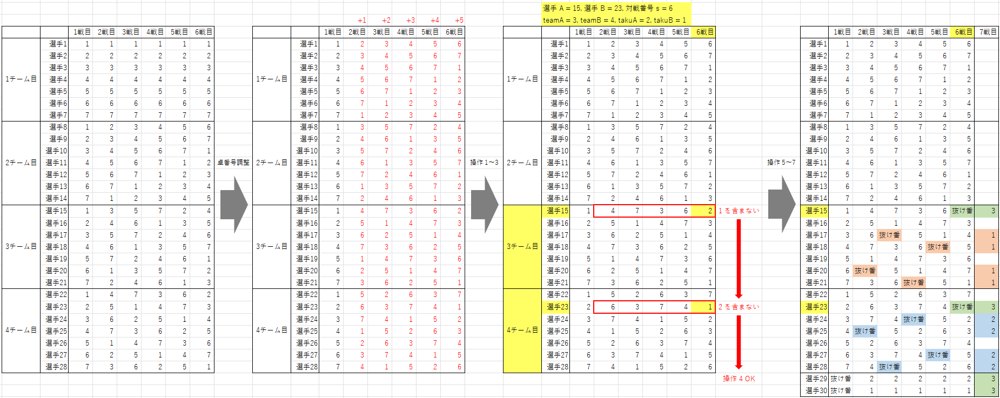

抜け番あり 1 人 6 戦、合計 7 戦 卓組作成方法
条件
- 4n + 2 人の選手がいる。
- 試合枠を 7 戦分設定する。
- 各選手は、そのうちの丁度 6 回に参加する。
- 最初の 6 戦は、それぞれについて、2 人が参加せず、その他の 4n 人が参加し、n 卓で行う。
- 最後の 1 戦は、不参加を経験した 12 人が参加し、3 卓で行う。
- どの選手も、同じ相手と複数回同卓しない。
30 人 (n = 7) の例
方法
以下の条件を満たす卓組を用意します。
- n 卓の 4 チーム戦の (どの選手も同じ相手と複数回同卓しない) 卓組 6 戦分である。
- 同じ卓を複数回使用する人がいない。
-
以下を満たす 2 選手 (A, B) のペアが存在する。
- A は 1 チーム目に、B は 2 チーム目に所属する。
- A と B は同卓しない。
5 卓以下の場合は条件 1 を満たせず、6 卓の場合は条件 1, 3 を同時には満たせないため、7 卓以上で考えます。
7 卓以上である場合、4チーム戦 卓組作成方法で作った卓組の任意の 6 戦が条件 1, 3 を満たしています。
条件 2 を満たすためには、リンク先の ① で作ったものを使う場合は、全員の卓番号を、2 戦目は +1、3 戦目は +2、4 戦目は +3
とずらすことでうまくいきます。
② で作ったものを使う場合は、6 戦の抜き出し方や、各対戦の卓番号のずらす数をプログラムで全探索すると、うまく調整できます。
その後、以下の操作を行います。
-
以下を満たす 2 選手 (A, B) のペアを見つける。
- A は 1 チーム目に、B は 2 チーム目に所属する。
- A と B は同卓しない。
- A, B の 2 戦目の卓番号を確認する。それぞれ ta, tb とする。
- 4 チーム戦の卓組の末尾に 2 人を付け足す (これで合計が n 人になる)。
- 付け足した 1 人目の 1 戦目を「抜け番」とし、2 ～ 6 戦目に「卓番号 ta」を記入する。
- 付け足した 2 人目の 1 戦目を「抜け番」とし、2 ～ 6 戦目に「卓番号 tb」を記入する。
- 以下をすべて「抜け番」に書き換える。
- 1 チーム目の全ての対戦の 2 ～ 6 戦目の「卓番号 ta」
- 2 チーム目の全ての対戦の 2 ～ 6 戦目の「卓番号 tb」
- 卓組の右に 1 戦を付け足し、抜け番を経験した選手に、以下のように記入する。
- A, B, 付け足した 2 人の合計 4 人に「卓番号 3」を記入する。
- 残る 1 チーム目の選手 4 人に「卓番号 1」を記入する。
- 残る 2 チーム目の選手 4 人に「卓番号 2」を記入する。
下の画像は、30 人 (n = 7) の場合の例です。
選手 A = 1, 選手 B = 9, 卓番号 ta = 2, 卓番号 tb = 4 となっています。

補足
-
当サイトに掲載している卓組は、上記の方法で作成した後に、以下の操作を複数回行っている場合があります。
- 卓番号の入れ替え (例: 1 戦目の卓番号 1 を 2 に、2 を 3 に、3 を 1 に全て書き換えている)
- 選手番号の入れ替え
- 対戦番号の入れ替え
- 今後、それぞれの手法のソースコード (Python) とその実行時間を掲載する予定です。
卓組一覧「抜け番あり 1人6戦 合計7戦」へ戻る